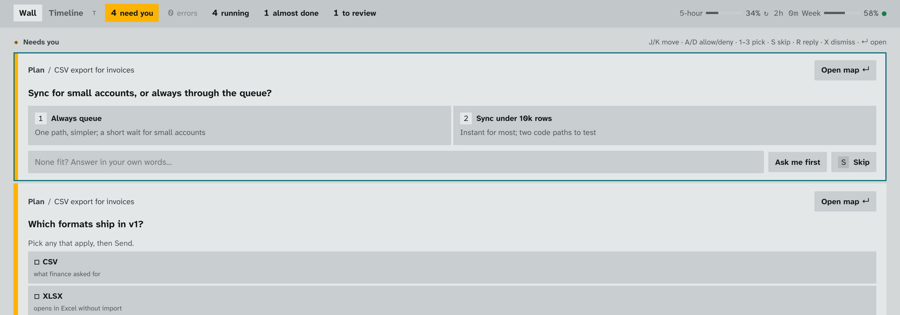
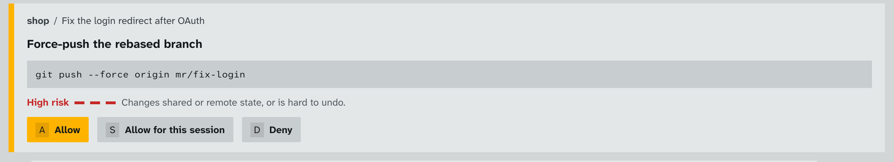
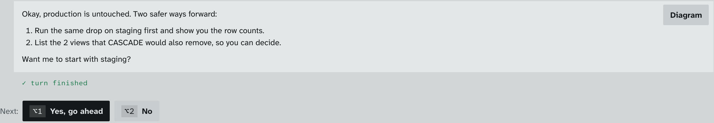
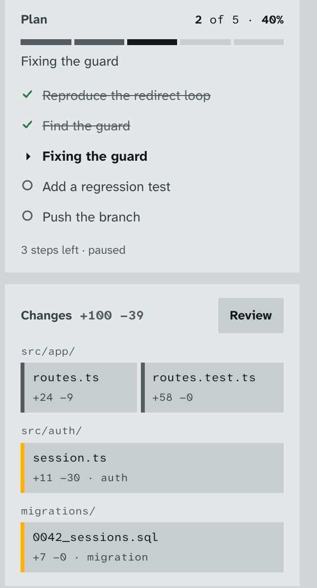
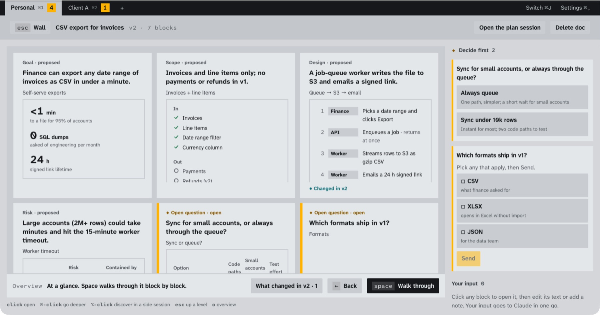
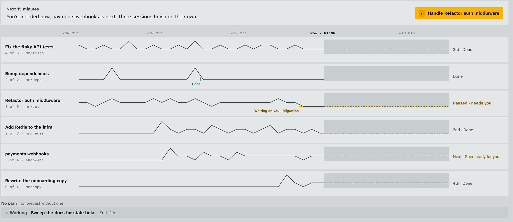
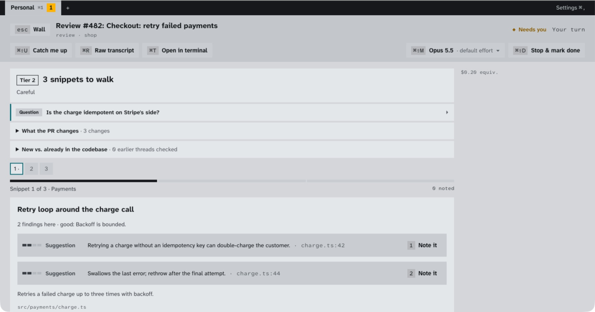

Cockpit shows each decision with only the context it needs, so you stop reading transcripts and just decide. Every question, permission and plan from all your sessions is in one queue, one key each.
2-minute install · no account · runs on the Claude plan you already have · macOS, Windows, Linux
🔊 Turn the sound on: it has its own score.
Run a few agents in terminals and your day turns into babysitting. Cockpit takes that job off your plate.
DROP TABLE scrolls past like any other command.Reading is the tiring part. A terminal makes you rebuild the context for every decision. Cockpit brings it with the question and leaves everything else out.
The author's own numbers: 25 days in terminals vs the first 4 days in Cockpit.
Small sample, and most of that week went into building Cockpit itself. Measured from session file timestamps and git history; no content was read.
Here's what a morning with eight sessions looks like.
Questions, permissions and plan approvals from every session, oldest first. Press 1–3 to pick, A to allow, D to deny. The session carries on by itself.

Claude says "drop the old invoices table." The card shows the rest: it's production, and it's CASCADE. Press D, and Claude comes back with a safer plan instead of a restore from backup.


Each session has a plan with live progress and a change map grouped by folder, with auth and migrations flagged.

Ask Claude to plan before it codes and you get a one-page map: goal, scope, design, risks and open questions, each drawn the way it reads best. Mark it up, send every note at once, then hit Build from doc.

The timeline shows what every session did, what it does next, and who will need you in the next 15 minutes.

The riskiest snippets come first, with the findings ranked. Press one key to note a finding and it becomes a review comment. Address mode does the reverse and turns reviewer threads into fixes.

Cockpit drives the Claude Code you already use, through Anthropic's official Agent SDK, signed in as you. Your skills, hooks and settings all keep working.
You need Claude Code, signed in. Don't have it yet?
Prefer a normal download? Pick yours below.
xattr -dr com.apple.quarantine /Applications/Cockpit.app once.Yes. Cockpit is MIT licensed. Your sessions use your existing Claude plan (Pro, Max, Team or API), exactly as they do in a terminal.
Yes. Cockpit runs your real Claude Code with your real setup. Workspaces keep memory and history separate per client while sharing your skills and settings.
The full transcript is one key away (⌘R), and every approval shows the exact command before it runs.
No. Cockpit is an independent open-source project built on Anthropic's public Agent SDK. "Claude" and "Claude Code" are trademarks of Anthropic.
Please do: git clone https://github.com/getcockpit/cockpit && ./scripts/dev.sh. See CONTRIBUTING.md.
Free, open source, and running in two minutes.